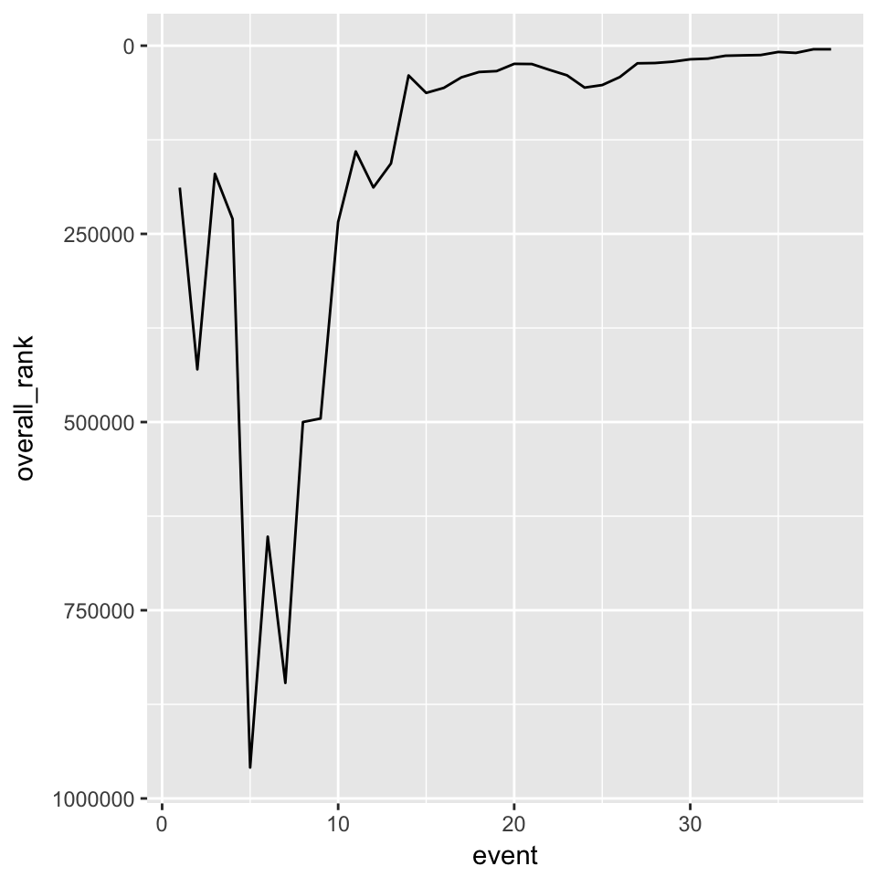
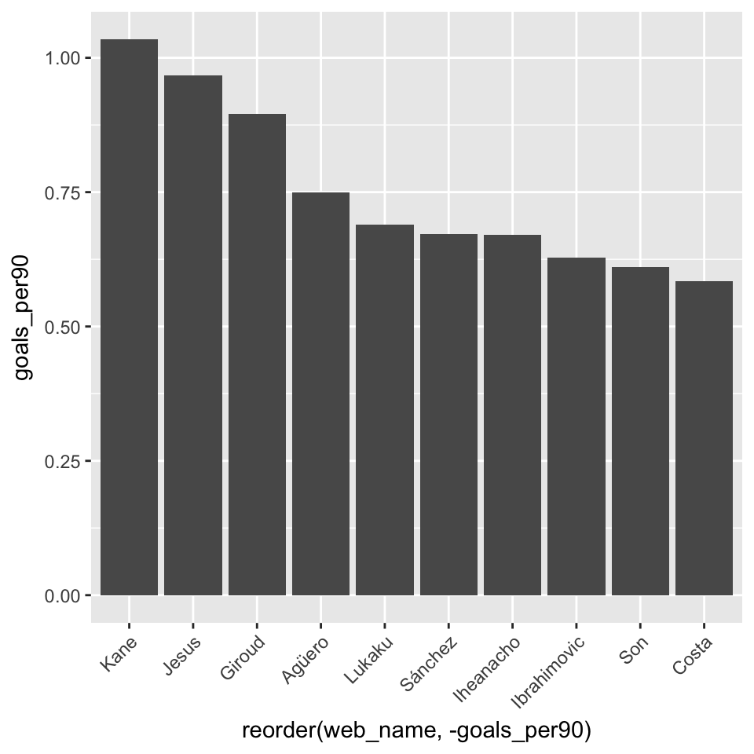
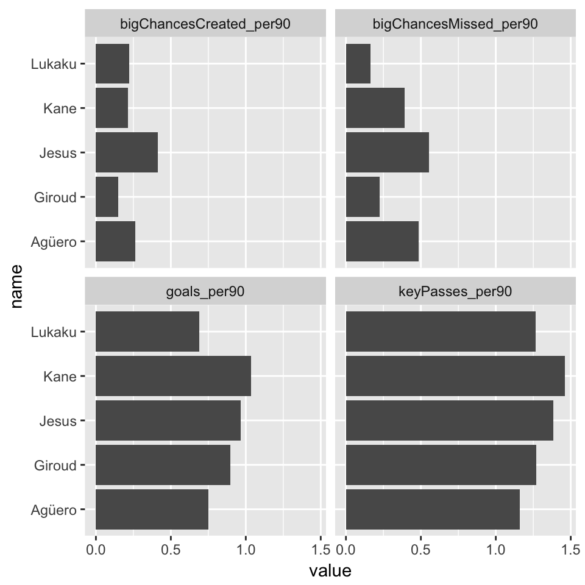

fplR: an Exploratory Data AnalysisThis vignette gives some potential use cases for the fplR package, intended as pointers in the right direction rather than a comprehensive demo. Familiarity with the tidyverse (dplyr and ggplot2, particularly) is useful, but not essential to follow this vignette.
First, load the fplR package, along with a couple of tidyverse helpers. Then, we’re ready to explore a few things.
# load packages
library(fplR)
library(dplyr)
library(ggplot2)# get my fpl season performance
myPerformance <- userPerformance(137633)
# plot my overall rank by gameweek
ggplot(data = myPerformance, aes(x=event, y=overall_rank, group=1)) +
geom_line() +
scale_y_reverse()
# get player list from current season, filter out players < 300 minutes, calculate 'goals per 90 mins' metric and get top 10
goals <- players() %>%
filter(minutes >= 300) %>%
mutate(goals_per90 = goals_scored / minutes * 90) %>%
top_n(n = 10, wt = goals_per90)
# quick plot of the top 10 'per90 scorers'
ggplot(data = goals, aes(x=reorder(web_name, -goals_per90), y=goals_per90)) +
geom_col() +
theme(axis.text.x=element_text(angle=45,hjust=1))
# now choose the top 5 'per90 scorers'
topPer90 <- top_n(goals, n = 5, wt=goals_per90)
# create empty list to append gameweek-level data to
topPer90Detailed <- list()
# loop through player ids in topPer90
for (i in topPer90$id) {
# get detailed data for player
data <- playerDetailed(player_id = i)
# append player name to dataframe
data$name <- topPer90$web_name[topPer90$id == i]
# append dataframe as item in list
topPer90Detailed[[i]] <- data
}
# bind dataframes
topPer90Detailed <- bind_rows(topPer90Detailed)
# calculate some other 'per90' metrics and plot them
topPer90Detailed %>%
group_by(name) %>%
summarise(goals_per90 = sum(goals_scored) / sum(minutes) * 90,
bigChancesCreated_per90 = sum(big_chances_created) / sum(minutes) * 90,
bigChancesMissed_per90 = sum(big_chances_missed) / sum(minutes) * 90,
keyPasses_per90 = sum(key_passes) / sum(minutes) * 90) %>%
gather(key=var, value=value, -name) %>%
ggplot(aes(x=name, y=value)) +
geom_col() +
coord_flip() +
facet_wrap( ~ var)